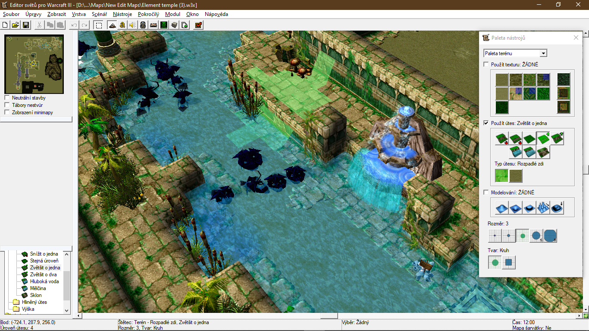

Warcraft III - the Frozen Throne

Warcraft III editor was the first really powerful editor I have encountered and I have spent countless hours in it designing various maps and map campains. It was also my first encounter with programming (via extensive game event scripting) and it has taught me all the basics.
Warcraft 3 - MOBA mapno link
McEdit filter "Generate TestForTileEntity" that generates a 1.7.10 testforblock command with the correct NBT data format for a tile entity. Command is output into the console from where it can be copied.